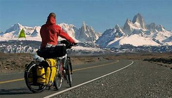
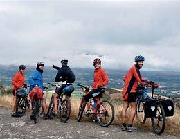
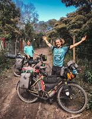

El cicloturismo de alforjas es el ciclismo a largas distancias, una actividad recreativa y no competitiva que combina la actividad física y el turismo. Consiste en viajar en bicicleta visitando los lugares que se encuentra uno a su paso. Se realiza por placer, no por competición, por lo que no se puede llegar a denominar práctica competitiva. Se pueden hacer viajes de cualquier duración, tanto en el día como de varias semanas, meses o años. Una persona en razonable forma física y con una bicicleta cargada de equipaje, puede recorrer entre 50 y 150 km por día, dependiendo del tipo de terreno, por lo que se pueden cubrir distancias considerables en unos pocos días.En tiempos de coronavirus, el cicloturismo promete tener un auge aún mayor, ya que el impulso que ya tenían las bicicletas va en aumento al ser un modo de moverse con velocidad y seguridad, respetando reglas como la sana distancia. La definición de cicloturismo de acuerdo a la Real Academia de la Lengua es simplemente: Turismo que se practica en bicicleta.Desde ese entonces, el concepto ha sido parte del mundo de los viajes, pero existe más de una forma de practicarlo, ¿sabes de cuales se tratan? ¿Cuáles son las modalidades del cicloturismo? De acuerdo a un estudio de María Moral, publicado en la revista Turismo y Desarrollo, esta actividad se divide en cuatro grandes modalidades.ciclismo en vacaciones Estos, los puede hacer cualquier viajero por el mundo, y se da cuando, como parte de todas las actividades que tienes en tu destino, realizas una actividad en bicicleta. Usualmente, el objetivo es conocer una ciudad y recorrer un área de forma más rápida de lo que sería hacerlo a pie, y con la ventaja de poder moverte libremente, sin depender del transporte público o de generar tráfico y contaminación en un coche.

La bicicleta para cicloturismo Las configuraciones de bicicleta de turismo son muy variables y pueden incluir de carretera, híbrida, reclinadas, y configuraciones en tándem. Una bicicleta de cicloturismo es una bicicleta diseñada o modificada para manejar el turismo en bicicleta. Para hacer las bicicletas suficientemente robustas, cómodas y capaz de llevar cargas pesadas, características especiales pueden incluir una larga distancia entre ejes (para el confort de marcha y evitar conflictos entre pedal-a-equipaje), materiales del cuadro que favorezcan la flexibilidad sobre la rigidez (para el confort de marcha), ruedas y neumáticos resistentes (para la capacidad de carga), y múltiples puntos de montaje (para bastidores de equipaje, guardabarros, y botellas de agua). Modalidades y estilos Rutas con coche de apoyo. Conducido por amigos/familiares o organizadas por empresas que suelen llevar una furgoneta de apoyo en la que viaja el equipaje, además de contar con herramientas y repuestos para solucionar cualquier avería, o poder actuar de «escoba» recogiendo a quienes no aguanten el ritmo o se lesionen.Carretera Panamericana, Ruta Nacional 40 (Argentina) Asia: Ruta de la seda Combinación de la bicicleta y otros medios de transporte El cicloturismo suele ser un tipo de viaje intermodal, que combina la bicicleta con otros medios de transporte, para llegar al punto de comienzo de la ruta. Viajar con la bicicleta y el equipo necesario puede ser engorroso y conviene informarse previamente de la normativa de cada compañía. Para el caso de los trenes puede consultarse este artículo: www.conbici.org Bicis al Tren - Consultado el 26 de julio de 2010. Especificaciones de la bicicleta de cicloturismo Bicicleta de cicloturismo Para hacer cicloturismo de alforjas se puede utilizar cualquier bicicleta que sea robusta, con componentes fáciles de encontrar en los lugares que pensemos visitar y que sea cómoda para su dueño. Al margen de esta premisa básica, hay todo tipo de formas de enfocar el cicloturismo de alforjas y se puede utilizar cualquier tipo de bici.

De tarjeta de crédito», es decir, alojándose en hoteles y comiendo en restaurantes. En autosuficiencia: cargando con todo lo necesario para acampar (tienda de campaña, saco de dormir, utensilios de cocina, etc.) o vivaquear. Bikepacking o cicloturismo de montaña: Combinación de bicicleta de montaña con cicloturismo de alforjas tradicional. Rutas populares en este sentido son la Transpirenaica en España o la Great Divide en Estados Unidos. Rutas populares Cicloturismo tipo expedición en cordillera del Paine Algunos países disfrutan de redes de carriles bici de largas distancias útiles para ciclistas, como Holanda, Alemania o Inglaterra, pero en general es el propio cicloturista el que va diseñando su itinerario intentando conectar carreteras poco transitadas y/o pistas de tierra en buen estado. Algunas de las rutas más populares son: Rutas internacionales: Cicloturismo L'Eroica en el otoño en la región de Chianti en Toscana, Italia Europa: Rutas EuroVelo, 12 rutas internacionales de largas distancias que cruzan todo el continente América: Sin embargo se suele entender que una bicicleta específica para cicloturismo tiene los siguientes elementos: Cuadro: Puede ser desde cromo-molibdeno a un aluminio de buena aleación. Poniendo la atención en que resista un mayor peso si se viaja con alforjas porque esto implica un peso adicional, pero en general cualquier cuadro de tipo medio es adecuado para iniciar un viaje. Alforjas: A pesar de que no sean componentes intrínsecos de la bici, son un objeto indispensable ya que guardaremos todo nuestro equipaje dentro de ellas. Por ello, es importante escoger unas alforjas que sean impermeables, resistentes, ligeras y con gran capacidad para poder meter todas nuestras cosas en ellas. Ruedas: Llantas de doble pared, radiado a tres cruces y cubiertas mixtas de buena calidad son recomendables para asegurar que van a resistir el peso adicional de las alforjas. Grupo: Se recomienda llevar una relación de marchas que permita subir cualquier rampa con poco esfuerzo, más cercana a los cambios de MTB que a los de carretera. Manubrio: (también denominado manillar): Los manillares específicos de cicloturismo se denominan manillares de mariposa, pero es posible ver viajes de muy larga distancia con cualquier tipo de manubrio incluyendo de carretera, MTB doble altura y otros. Pedales:

Se puede usar cualquier tipo de pedal para cicloturismo pero en el caso de optar por pedales de enganches o calas, se deberían combinar con zapatillas específicas mixtas que permitan caminar fuera de la bici por terrenos quebrados sin resbalarPero, la bicicleta no es la actividad principal, e incluso es raro que se le utilice más de un par de veces. Excursiones en bicicleta Aquí empiezan las modalidades de cicloturismo puro, y es que en estos casos la bicicleta ya es la actividad principal del viaje. En las excursiones, se hacen viajes de un día, que parten de un punto base y tienen una duración de más de tres horas, pero terminan en el mismo lugar donde iniciaron.Cicloturismo en alforjas En este caso, el objetivo es llegar más lejos y el ciclista se mueve de lugar en lugar, avanzando por una ruta y durmiendo cada noche en un punto diferente. También se le llama cicloturismo itinerante, y tiene la ventaja de que te permite conocer más lugares, e incluso improvisar y visitar destinos diferentes a los planeados.La desventaja es que necesitas llevar todo tu equipaje contigo, por lo que el camino es más cansado. En esta modalidad, existen quienes pasan la noche en hoteles y comiendo en restaurantes, y quienes acampan, pero no se considera a aquello que aunque usen la bicicleta como actividad principal, utilizan otro medio de transporte para llegar de destino a destino. Cicloturismo deportivo Esta última modalidad ya requiere un entrenamiento y un equipo especial para recorrer grandes distancias, que pueden ser de más de 50 kilómetros cada día, y donde el pedalear es más importante que el lugar a visitar. Se puede hacer por carreteras o por rutas de montaña, y aunque no se trate de una competición, si exige una preparación física.La desventaja es que necesitas llevar todo tu equipaje contigo, por lo que el camino es más cansado. En esta modalidad, existen quienes pasan la noche en hoteles y comiendo en restaurantes, y quienes acampan, pero no se considera a aquello que aunque usen la bicicleta como actividad principal, utilizan otro medio de transporte para llegar de destino a destino. Cicloturismo deportivo Esta última modalidad ya requiere un entrenamiento y un equipo especial para recorrer grandes distancias, que pueden ser de más de 50 kilómetros cada día, y donde el pedalear es más importante que el lugar a visitar. Se puede hacer por carreteras o por rutas de montaña, y aunque no se trate de una competición, si exige una preparación física.El viaje suele tener un tiempo limitado, pero cabe mencionar que también existen grandes viajeros, que han hecho travesías épicas, de meses recorriendo países o continentes enteros. Incluso, hay quienes han dado la vuelta al mundo en bicicleta, pasando años en ruta. Entre ellos se encuentran el inglés Thomas Stevens, la primera persona en dar la vuelta al mundo en bicicleta entre 1884 y 1886; y Annie Londonberry, la primera mujer que logró la hazaña entre 1894 y 1895. Beneficios del cicloturismo La principal ventaja del cicloturismo es que es una rama del turismo sostenible, y como tal es parte de una manera de viajar que nos permite cambiar el mundo para bien.Además, al promover un recorrido más lento, genera mayores oportunidades de conocer la gastronomía y cultura local. Tiene beneficios de salud, pues al pedalear haces ejercicio cardiovascular, con lo cual beneficias corazón, pulmones y aparato circulatorio, aprovechando mejor el oxígeno y manteniéndote sano y con buena condición física. Finalmente, de acuerdo a un estudio del Parlamento Europeo, ofrece grandes beneficios a los territorios y países donde se practica, entre los que destaca la reutilización de infraestructura en desuso como vías de ferrocarril, o caminos rurales. En el caso de ciudades, al fomentarse el uso de la bicicleta se genera una infraestructura más accesible, que indirectamente ayuda al turismo incluyente y quita espacio a los contaminantes automóviles, promoviendo mejores medios de moverse.